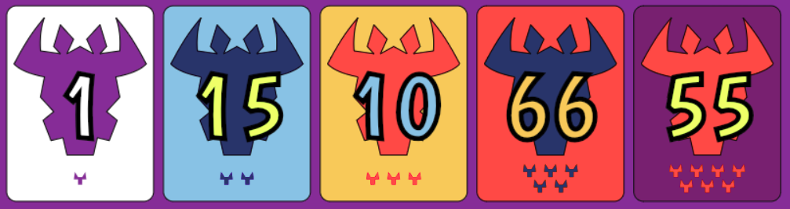

6 Nimmt!
How To Set Up A Game
From the home page, one player selects "New Game" and enters a nickname for themselves.
A game code is assigned and can be shared with others. Artificial players can also be added from this page.
Other players can join the game by selecting "Join Game" from the home page and entering the game code.
In the same way, a "spectator" can join. A spectator will not get cards and will not be expected to play. It will simply display the table at all times. It is recommended that when a group of friends is playing, they join a spectator and display this on a TV. This makes it easier for each player to view their cards on their phones and have the table displayed on the TV.
Game Rules
The game is played with a special card deck. There are 104 cards numbered 1-104. Each card has a number of cattle heads on it.
Each cattle head is a point, and the goal is be the player who ends up with the fewest points.
Setup
Each player will be given 10 cards, and 4 cards are placed on the table in a vertical line from smallest to largest.
The table looks like this:

The white spaces on the right are where the cards played each round will go.
A player's hand looks like this:

Swipe left or right to switch between the table and your hand.
Gameplay
At the start of each turn, each player selects a card from their hand to play.
When every player has played a card, the cards are uncovered, and played from smallest to largest according to the following set of rules:
- A card will be placed on the row where the played card is larger than the last card on that row, but smaller than the last card on the next row.
- If the row where the played card must be placed already contains 5 cards (the player's card is the 6th), the 5 cards will be removed, their cattle heads will be added to the score of the player who played that card, and the played card will be left to start a new row.
- If the played card is lower than all the last cards present on the four rows, the player must choose a row to take(usually the row with the fewest cattle heads), leaving only the played card on the row.


After 10 turns, when the players run out of cards, they each get 10 new cards, the table is reset with 4 cards, and the game continues.
End of Game
The game ends when someone reaches 66 points. At this point, the winner is whoever has the fewest points.